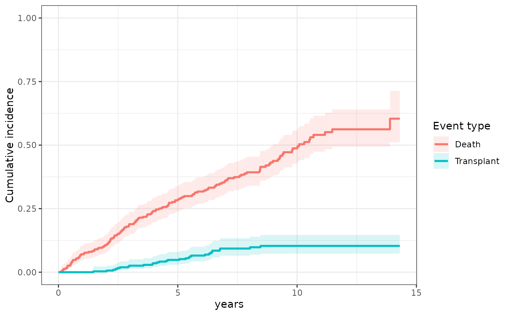
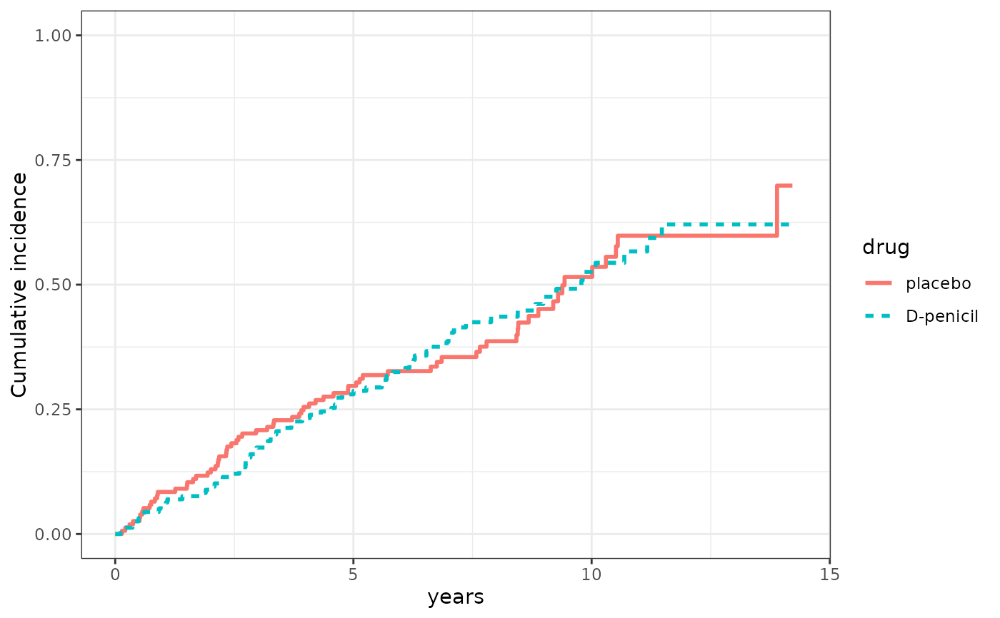

Plots the nonparametric cumulative incidence of each event type over
time, estimated by the Aalen–Johansen estimator (via
survfit on a multi-state Surv outcome).
With a single event type this equals one minus the Kaplan–Meier
survival curve; with competing risks each event type gets its own curve,
correctly accounting for the other event types instead of treating them
as censoring. An optional group_variable draws separate curves per
group (e.g. treatment arm).
Usage
cifPlot(
data_plot_all,
survival_variable,
event_type_variable,
id_variable = "id",
censor_value = 0,
event_labels = NULL,
group_variable = NULL,
conf_int = TRUE
)Arguments
- data_plot_all
A
data.framewith the time-to-event outcome. It may be in long format (several rows per subject, as for the longitudinal sub-model); only the first row of each subject is used, andsurvival_variable,event_type_variableandgroup_variablemust be constant within each subject.- survival_variable
Name of the time-to-event variable.
- event_type_variable
Name of the variable holding each subject's event type, or censoring status.
- id_variable
Name of the subject ID column. Default is
"id".- censor_value
The value of
event_type_variablethat marks a censored subject. Default0. UseNAwhen censored subjects have a missing event type, as withpbc3$status4. Every other value is treated as an event type.- event_labels
Optional legend labels for the event types: either a character vector named by the event type values (e.g.
c("1" = "Death", "2" = "Transplant")), or an unnamed one in the sorted order of the event type values. Default uses the values themselves.- group_variable
Optional name of a subject-level variable to stratify the curves by, shown by line type (and also by color when there is a single event type).
NULL(default) for no grouping.- conf_int
Logical; draw pointwise 95\
TRUE.
Examples
data(pbc3)
# competing risks: death (1) and transplantation (2); 0 = censored
cifPlot(pbc3, survival_variable = "years", event_type_variable = "status5",
event_labels = c("1" = "Death", "2" = "Transplant"))
 # the same events coded as in status4 (censored subjects are NA)
cifPlot(pbc3, survival_variable = "years", event_type_variable = "status4",
censor_value = NA, event_labels = c("0" = "Death", "1" = "Transplant"))
# the same events coded as in status4 (censored subjects are NA)
cifPlot(pbc3, survival_variable = "years", event_type_variable = "status4",
censor_value = NA, event_labels = c("0" = "Death", "1" = "Transplant"))

# single event type, by treatment arm
cifPlot(pbc3, survival_variable = "years", event_type_variable = "status2",
group_variable = "drug", conf_int = FALSE)
#> Ignoring unknown labels:
#> • fill : "drug"
